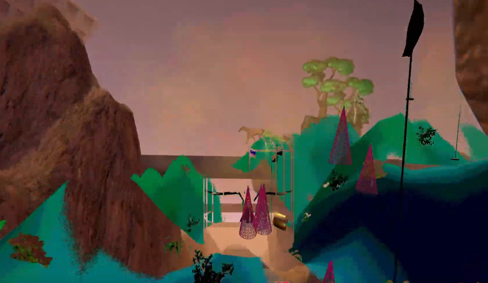

Projects
Quake 1 Singple Player maps


Quake 1 (1996) was one of the first really 3d games I played, i used to sit there running around in the shareware version for hours dreaming of making my own levels. Now it's very easy to do so using tools like trenchbroom and a lot of support from the quake mapping community discord! My maps are made during community jams where participants are given just a few days or even hours to make a map loosely based on a theme.
Games with AAA Collective


- 
AAA was an "art games" collective based primarily in Berlin. We made games and performances together up to 2020, and started somewhere in 2015.
The games are free to play on https://aaa.itch.io
Learn Processing
Processing is a language for teaching programming and for creating graphics easily. I made a video tutorial series on youtube to help people start from zero.
Songthief (unfinished)
Songthief is a web interface for browsing your music that happens to be stored on big shitty corporate sites. It is especially targeted at youtube which is slow and has very poor playlist management. Import your playlists once, then seach and stream those youtube videos right in songthief's UI! Searching and playlist management is lightning fast, because it's stored on our side. Currenly hoping to support embed players for soundcloud and bandcamp as well.
Songthief doesn't save any media locally, we're basically riding on the fact that these big companies have to keep their CDNs open. It's like creating your own card catalog for the bookstore around the corner. Your shop is my library, because i can just go in and read it there! This doesn't solve content removal, but if the CDN does delete the media data the entry with title and uploader will still be in songthief's database.